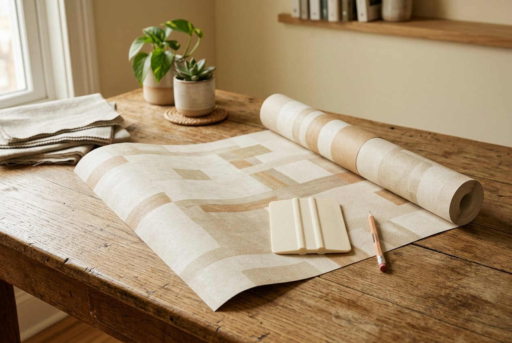

Walls & finishes
What tools do you need for peel-and-stick wallpaper?
Set yourself up to smooth, trim and finish without rummaging for tools halfway through the wall.

Illustration of the category, not the observed listing.
Start with the wallpaper instructions
Check whether your wall finish is suitable, whether you need to prep it, and what the manufacturer recommends for cutting. Plan the first strip against a straight reference before committing to the rest of the wall.
Check what actually comes in the kit
A smoothing tool and a trimming tool do different jobs. Art3d describes separate squeegees and a craft knife in its A17999 kit. Confirm the contents of the exact variant you’re considering rather than buying from the thumbnail.
Make a test pass first
Use an offcut in a discreet spot to see how your material responds to pressure and repositioning. If the paper catches or marks, stop and check the manufacturer’s instructions before moving on.
Keep reading
Kitchen organization
Adhesive or screws for an under-cabinet paper towel holder?
Before you pick a mount, check the cabinet underside, the roll you buy and how much room you need to swap it.
Storage & shelving
Will an adjustable cookware rack fit your cabinet?
Measure the pans, the cabinet opening and the room you need to take a pan out with one hand.